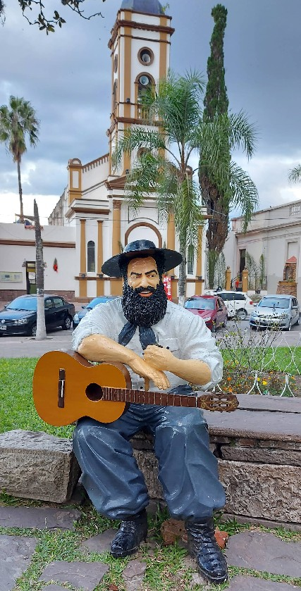

Jorge Cafrune
El cantor del pueblo
Monumento en la plaza Domingo Teófilo Pérez, El Carmen, Jujuy

Escuchá su historia
No se pudo cargar el audio. Recargá la página para intentar de nuevo.
Leer el texto del audio
Estás frente al monumento a Jorge Cafrune, en la plaza Domingo Teófilo Pérez, en El Carmen.
Jorge Antonio Cafrune nació el 8 de agosto de 1937 en Perico, Jujuy. Lo apodaban “El Turco”, y con los años el pueblo lo llamó “el cantor del pueblo”.
Era un hombre de campo, de voz profunda y presencia imponente, que vestía como gaucho y casi nunca se quitaba su sombrero de ala ancha.
En 1962 subió al escenario del Festival de Cosquín y fue premiado como Revelación. Tres años después, en 1965, fue él quien presentó a una joven Mercedes Sosa en ese mismo escenario. Un gesto de un artista generoso.
Eran los años de la llamada edad dorada del folclore, y Cafrune fue una de sus grandes figuras. Sus canciones hablaban de las injusticias sociales y daban voz a quienes tenían menos.
En 1967 recorrió el país a caballo para conocer sus tradiciones y su gente, y fue registrando el viaje con su cámara de fotos. Aquella experiencia le dio muchísimo conocimiento, aunque lo dejó sin dinero.
El 1 de febrero de 1978, a los 41 años, murió en un accidente de tránsito mientras cabalgaba hacia Yapeyú, en Corrientes. Llevaba un cofre con tierra de Boulogne-sur-Mer, la ciudad francesa donde murió San Martín, para depositarlo en su homenaje.
Su hija Yamila Cafrune sigue cantando y continúa su legado.